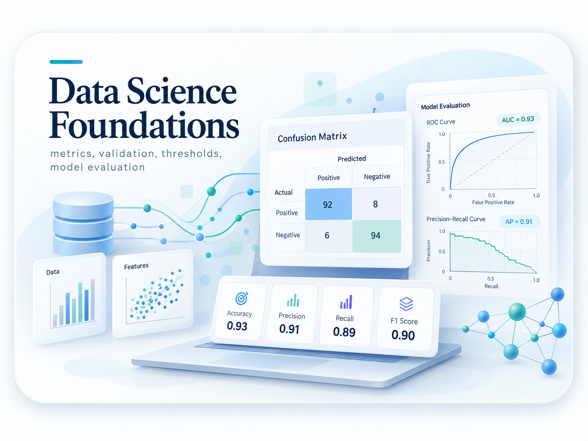
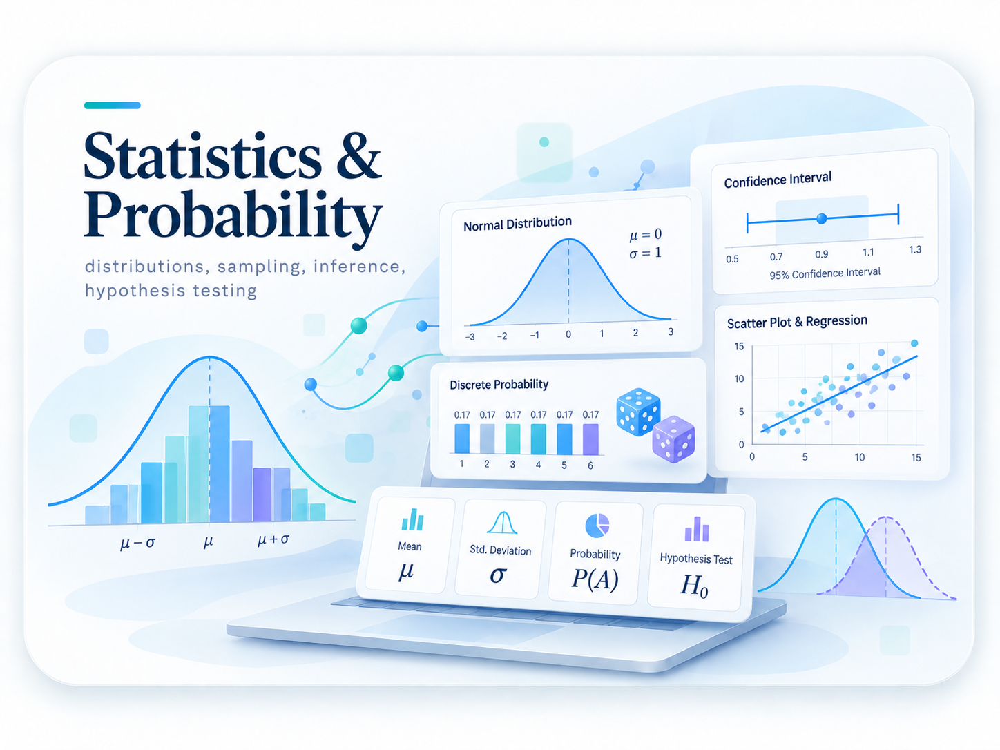
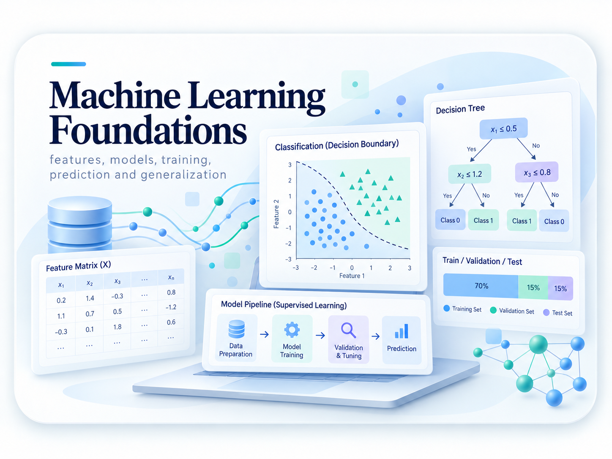
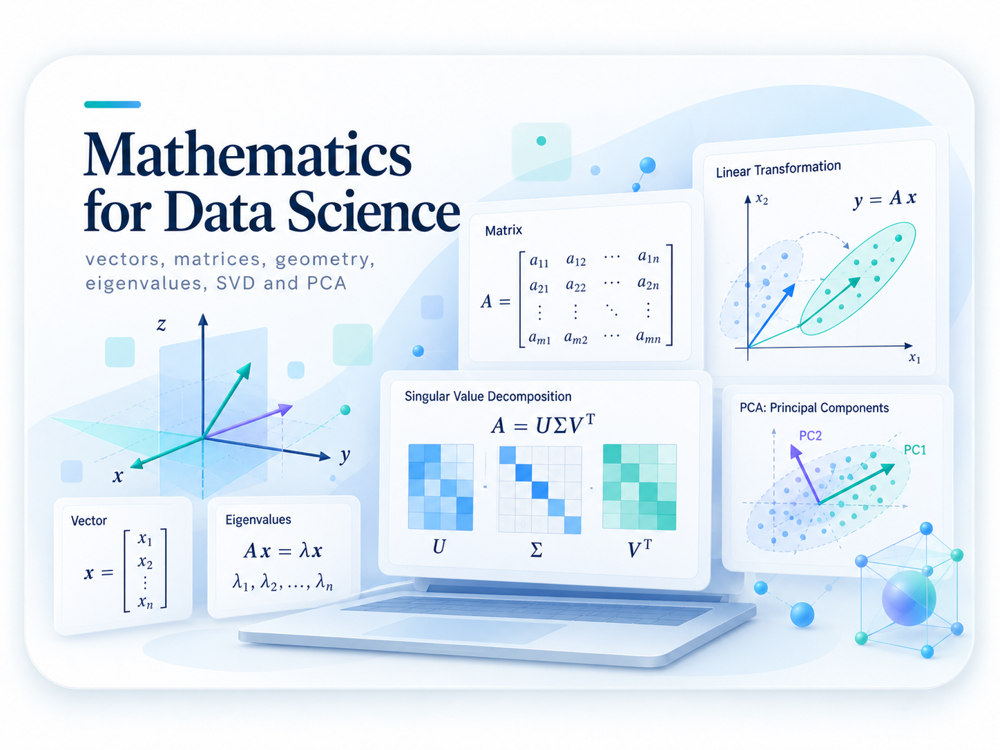
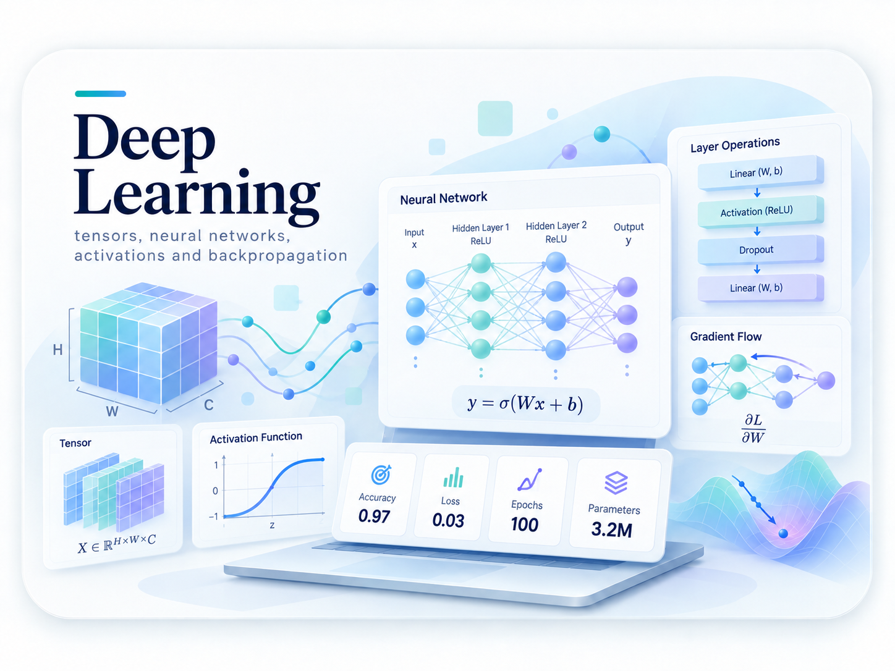
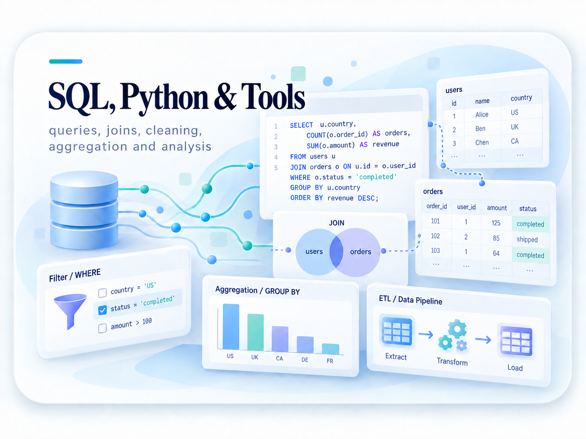
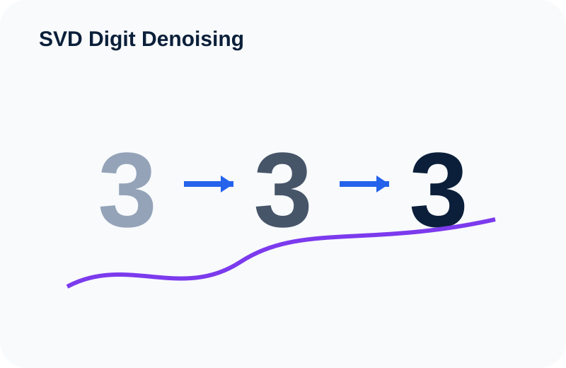
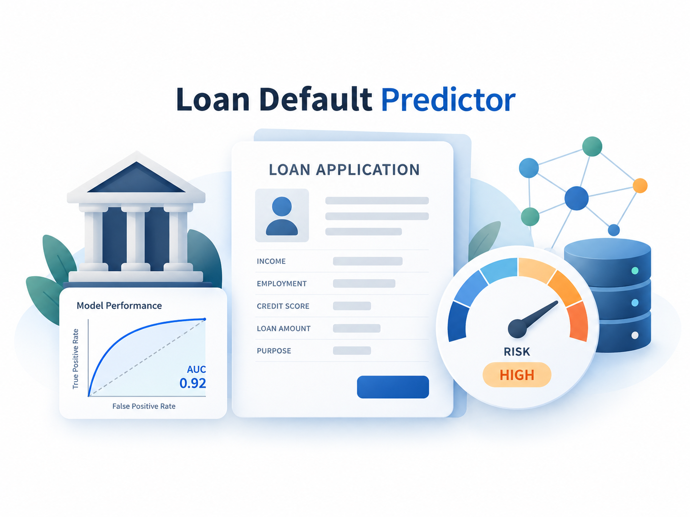
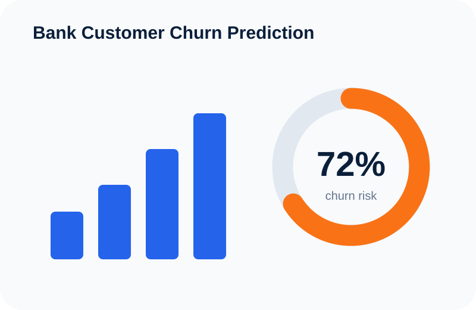
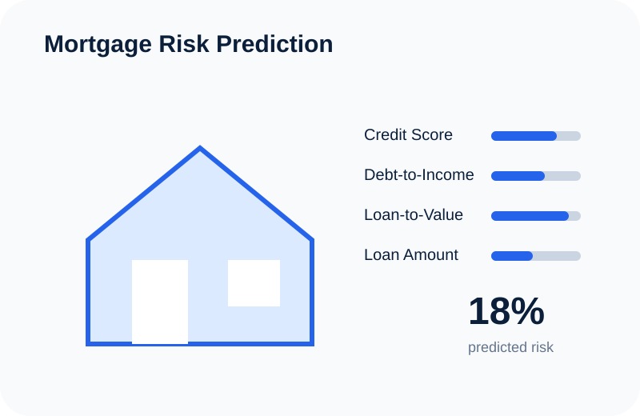

Métricas, validación, thresholds, model evaluation y los fundamentos necesarios para comprender cómo se construyen y evalúan soluciones de Data Science.
Explorar área →Estudio y exploro Data Science, Statistics, Machine Learning, Deep Learning y Artificial Intelligence, y comparto lo que aprendo mediante explicaciones visuales, proyectos prácticos y guías paso a paso.
Explora rutas estructuradas que conectan teoría, intuición, matemáticas, código y aplicaciones prácticas en las principales áreas de Data Science.

Métricas, validación, thresholds, model evaluation y los fundamentos necesarios para comprender cómo se construyen y evalúan soluciones de Data Science.
Explorar área →
Probability, distributions, sampling, statistical inference, hypothesis testing y los fundamentos de la incertidumbre y la toma de decisiones con datos.
Explorar área →
Features, models, training, prediction, validation, generalization y el proceso completo de construir, evaluar e interpretar modelos predictivos.
Explorar área →
Vectors, matrices, geometry, eigenvalues, PCA, SVD, calculus y optimization explicados desde los fundamentos y conectados con aplicaciones de Data Science.
Explorar área →
Tensors, neural networks, activation functions, backpropagation, optimization, CNNs, RNNs, Attention y Transformers.
Explorar área →
Python, NumPy, pandas, SQL, data cleaning, joins, aggregations, visualization, Jupyter, Git y reproducible analysis.
Explorar área →
Uso de Singular Value Decomposition (SVD) y low-rank reconstruction para recuperar estructura oculta en imágenes de dígitos manuscritos contaminadas con ruido.

Aplicación de Machine Learning para estimar riesgo de default, interpretar los factores que influyen en la predicción y apoyar el análisis de riesgo crediticio.
Ver proyecto →
Proyecto de clasificación que analiza qué clientes tienen mayor probabilidad de abandonar el banco y qué variables contribuyen al churn.

Aplicación de Data Science y predictive modeling para comprender patrones asociados con riesgo de crédito hipotecario.
Ver proyecto →Guías estructuradas para comprender primero la intuición y la teoría, trabajar ejemplos paso a paso y finalmente conectar los conceptos con aplicaciones de Data Science.
Aprende True Positives, True Negatives, False Positives y False Negatives, y cómo se conectan con Accuracy, Precision, Recall, Specificity y F1 Score.
Leer guía →Una introducción desde los fundamentos para comprender eventos, espacios muestrales, reglas de probabilidad y razonamiento bajo incertidumbre.
PróximamenteComprende cómo los modelos aprenden ajustando parámetros paso a paso para minimizar una Loss Function.
PróximamenteMi trayectoria académica combina Economía, Data Science y Artificial Intelligence. Utilizo este sitio para documentar lo que aprendo y transformar ideas complejas en explicaciones claras, ejemplos visuales y proyectos prácticos.
Más sobre mí